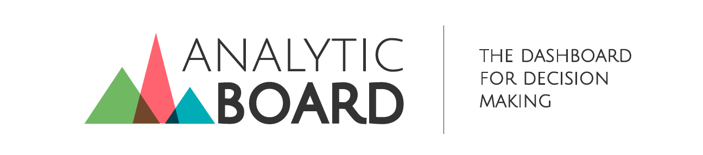

D3.jsIntroducción
Los datos se convirtieron en el nuevo petroleo, si no los refinas no tienen mucho valor.

leonardocongote@ingeniosolido.com@leocongote
http://www.ingeniosolido.com http://analyticboard.com/Qué es D3.js?
Qué NO es D3.js?
NO es una librería de charts, aunque se pueden hacer charts
NO es una librería de mapas, aunque se pueden hacer mapas
NO es una capa de abstracción de SVG o Canvas, aunque puedes usarlos
Qué es D3.js?
Data Driven Documents!!!
Crux:MEOLLO
Manipulación eficiente de documentos basados en datos.
Traer datos a la vida usando HTML, canvas, GEOjson, Topojoson, SVG y CSS
Para realizar cualquier tipo devisualización
Mapas
GeoJson
GeoJson es un formato para codificar Datos geográficos en formas geometricas como: Puntos, Líneas, Poligonos….
{
"type": "Feature",
"geometry": {
"type": "Point",
"coordinates": [125.6, 10.1]
},
"properties": {
"name": "Dinagat Islands"
}
}